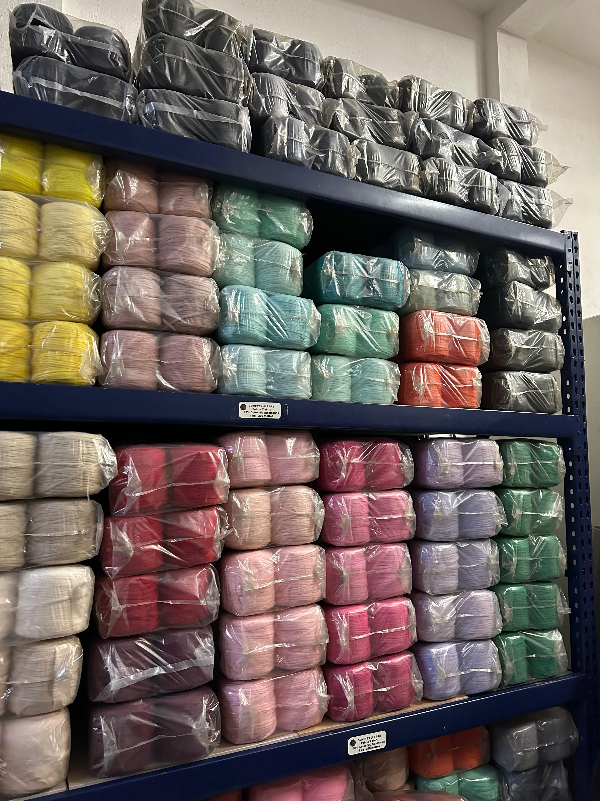
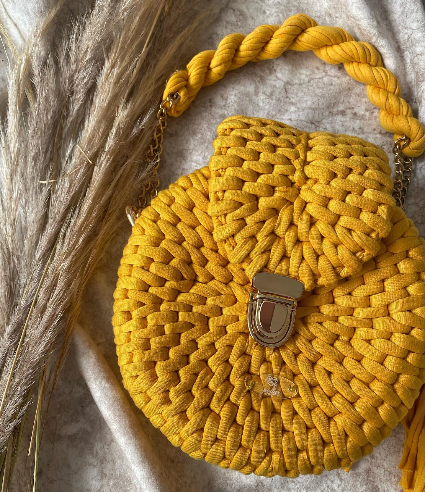
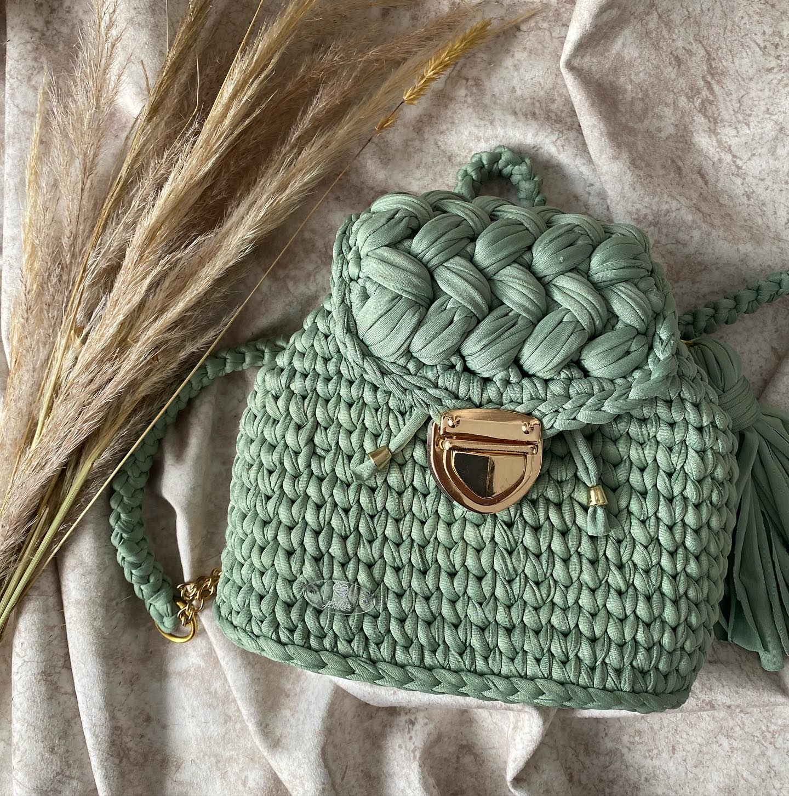
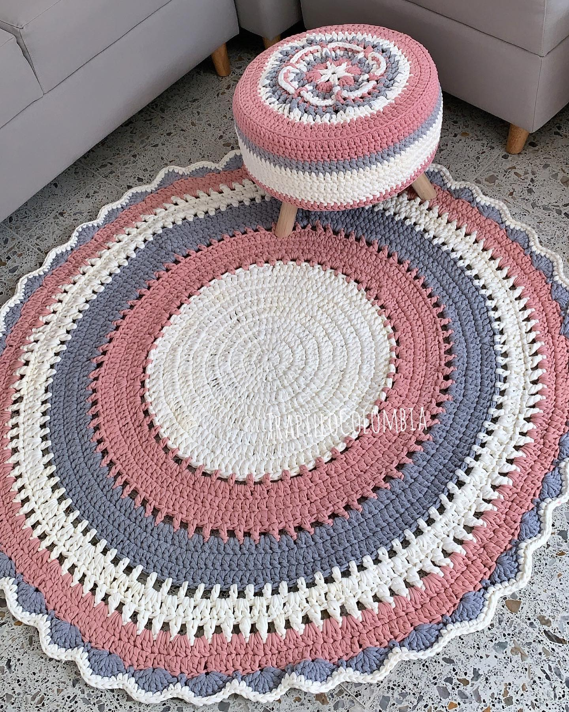
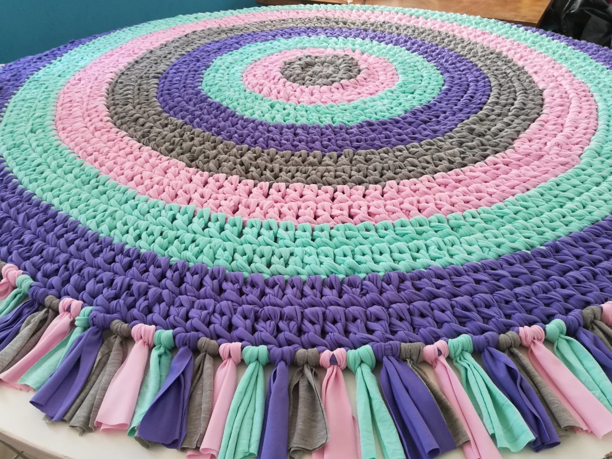
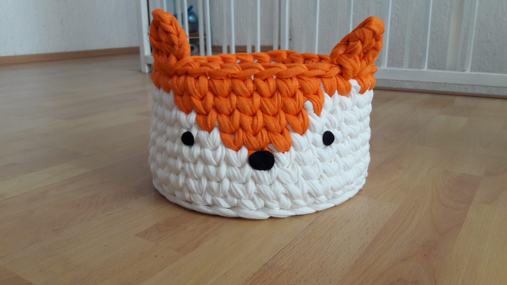
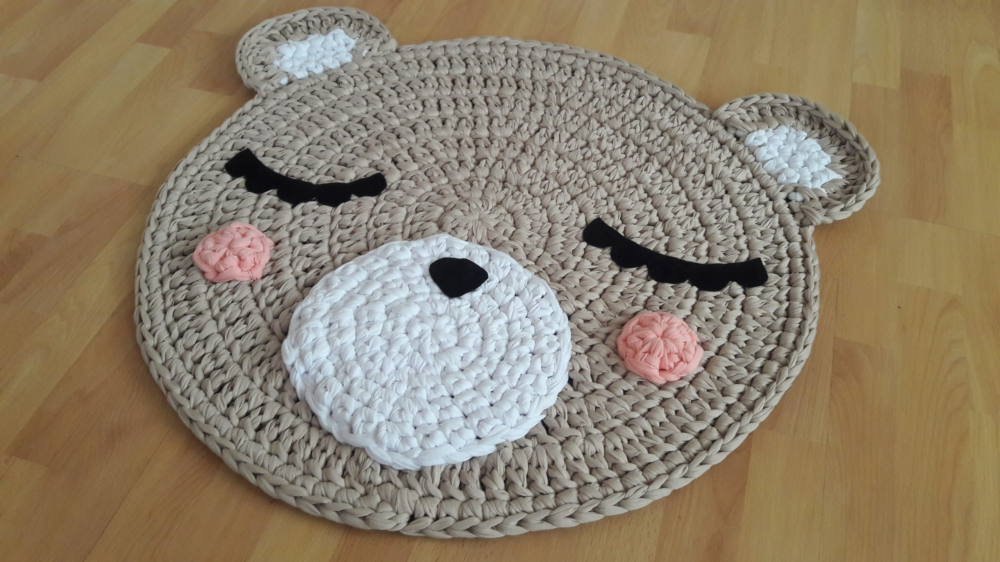

¿Quienes somos?
Dometex JLS es un empresa que nacio hace mas de 5 años de la manera de su fundadora Monica Tapias. Nace de la necesidad de sacarle un valor agregado a el desperdicio textil de las grandes compañias del país. De la mano varias tejedoras del país se fue descubriendo la gran utilidad del trapillo para la elaboración de artesanias y proyectos más grandes. Dentro de las posibilidades encontradas con este sobrante textil se encontro la elaboración de las siguientes actividades:
Tejidos & Proyectos
 La elaboración de un lindo bolso tejido a mano con nuestro material seleccionado algodón licrado le da una sensación unica al producto, seleccioando muy bien por nuestras colaborados, tanto el grosor como en tonalidad, se puede garantizar a nuestros clientes que su producto tendra una excelente calidad
 La elaboración de un lindo bolso tejido a mano con nuestro material seleccionado licra o pluma le da una ligereza al producto, garantizado asi que el cliente final este conforme con el producto y nuestra tejedora tenga una excelente experiencia en el proceso de elaboración. Para obtener información de productos como estos ingresar a @polluxflaring
 La elaboración de un lindo tape con un juego de sala para el butaco son excelentes opciones para la utilización de nuestro material. a elaboración de estos tapes se dan con algodón licrado o burda, debido a el peso y rigidez de estos materiales son aptos para esta elaboración de estos proyectos de artesania. a elaboración de estos tapes se dan con algodón licrado o burda, debido a el peso y rigidez de estos materiales son aptos para esta elaboración de estos proyectos de artesania.
 La elaboración de estos tapes se dan con algodón licrado o burda, debido a el peso y rigidez de estos materiales son aptos para esta elaboración de estos proyectos de artesania.
 L a elaboración de estos tapes se dan con algodón licrado o burda, debido a el peso y rigidez de estos materiales son aptos para esta elaboración de estos proyectos de artesania.
 La imaginación la llevan ustedes, con nuestro trapillo pueden elaborar tapetes de distintas variedades. a elaboración de estos tapes se dan con algodón licrado o burda, debido a el peso y rigidez de estos materiales son aptos para esta elaboración de estos proyectos de artesania.
Datos importantes